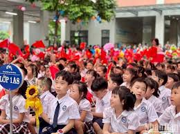

EDUCACIÓN EN VIETNAM
La educación en Vietnam ha experimentado transformaciones significativas en las últimas décadas, reflejando el desarrollo económico y social del país. Aquí hay algunos aspectos clave sobre el sistema educativo vietnamita: 1. **Estructura del sistema educativo**: El sistema educativo en Vietnam se divide en cinco niveles principales: educación preescolar, educación primaria, educación secundaria básica, educación secundaria superior y educación terciaria. 2. **Educación obligatoria y gratuita**: La educación primaria y secundaria básica son obligatorias y gratuitas para todos los niños vietnamitas. Sin embargo, hay desafíos en áreas rurales y para minorías étnicas en términos de acceso y calidad educativa. 3. **Enfoque en la educación**: Vietnam ha puesto un fuerte énfasis en la educación como motor de desarrollo económico y social. Esto se refleja en altos índices de matriculación y en el énfasis en la educación técnica y profesional para satisfacer las necesidades del mercado laboral. 4. **Rendimiento académico**: Tradicionalmente, Vietnam ha tenido un rendimiento académico notable en áreas como matemáticas y ciencias en comparación con otros países en pruebas internacionales como PISA. 5. **Reformas y desafíos**: A pesar de los avances, el sistema educativo enfrenta desafíos como la equidad en el acceso, la calidad educativa uniforme en todo el país y la necesidad de adaptarse a un entorno globalizado. 6. **Educación superior**: Vietnam está expandiendo rápidamente su sector de educación superior, con un número creciente de instituciones y programas académicos. Las universidades vietnamitas están buscando aumentar su colaboración internacional y mejorar la calidad de la investigación. En resumen, la educación en Vietnam ha evolucionado significativamente para satisfacer las demandas de una economía en desarrollo, aunque enfrenta desafíos en términos de equidad y calidad educativa. |
 |
 |
creado por Sanders Alexa